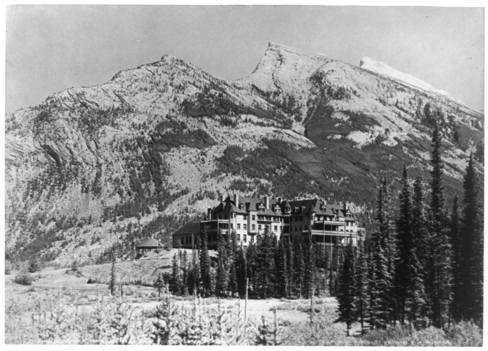

Throughout its history, Banff National Park has been shaped by tension between conservationist and land exploitation interests. The park was established on 25 November 1885 as Banff Hot Springs Reserve, in response to conflicting claims over who discovered hot springs there and who had the right to develop the hot springs for commercial interests. The conservationists prevailed when Prime Minister John A. Macdonald set aside the hot springs as a small protected reserve, which was later expanded to include Lake Louise and other areas extending north to the Columbia Icefield.
Early History
Archaeological evidence found at Vermilion Lakes indicates the first human activity in Banff to 10,300 B.P. Prior to European contact, aboriginals, including the Stoneys, Kootenay, Tsuu T'ina, Kainai, Peigans, and Siksika, resided in the region where they hunted bison and other game. With the admission of British Columbia to Canada on 20 July 1871, Canada agreed to build a transcontinental railroad. Construction of the railroad began in 1875, with Kicking Horse Pass chosen, over the more northerly Yellowhead Pass, as the route through the Canadian Rockies. Ten years later, on 7 November 1885, the last spike was driven in Craigellachie, British Columbia.
Rocky Mountains Park
With conflicting claims over discovery of hot springs in Banff, Prime Minister John A. Macdonald decided to set aside a small reserve of 26 square kilometres (10 sq mi) around the hot springs at Cave and Basin as a public park known as the Banff Hot Springs Reserve in 1885. Under the Rocky Mountains Park Act, enacted on 23 June 1887, the park was expanded to 674 km2 (260 sq mi) and named Rocky Mountains Park. This was Canada's first national park, and the third established in North America, after Yellowstone and Mackinac National Parks. The Canadian Pacific Railway built the Banff Springs Hotel and Lake Louise Chalet to attract tourists and increase the number of rail passengers.
The Stoney (Assiniboine) First Nations were removed from Banff National Park between the years 1890 and 1920. The park was designed to appeal to sportsmen, and tourists. The exclusionary policy met the goals of sports hunting, tourism, and game conservation, as well as of those attempting to "civilize" the Indians.
Early on, Banff was popular with wealthy European and American tourists, the former of which arrived in Canada via trans-Atlantic luxury liner and continued westward on the railroad. Some visitors participated in mountaineering activities, often hiring local guides. Guides Jim and Bill Brewster founded one of the first outfitters in Banff. From 1906, the Alpine Club of Canada organized climbs, hikes and camps in the park.
By 1911, Banff was accessible by automobile from Calgary. Beginning in 1916, the Brewsters offered motorcoach tours of Banff. In 1920, access to Lake Louise by road was available, and the Banff-Windermere Road opened in 1923 to connect Banff with British Columbia.
In 1902, the park was expanded to cover 11,400 km2 (4,400 sq mi), encompassing areas around Lake Louise, and the Bow, Red Deer, Kananaskis, and Spray rivers. Bowing to pressure from grazing and logging interests, the size of the park was reduced in 1911 to 4,663 km2 (1,800 sq mi), eliminating many eastern foothills areas from the park. Park boundaries changed several more times up until 1930, when the area of Banff was fixed at 6,697 km2 (2,586 sq mi), with the passage of the National Parks Act. The Act, which took effect May 30, 1930, also renamed the park Banff National Park, named for the Canadian Pacific Railway station, which in turn was named after the Banffshire region in Scotland. With the construction of a new east gate in 1933, Alberta transferred 0.84 km2 (0.32 sq mi) to the park. This, along with other minor changes in the park boundaries in 1949, set the area of the park at 6,641 km2 (2,564 sq mi).
Coal Mining
In 1887, local aboriginal tribes signed Treaty 7, which gave Canada rights to explore the land for resources. At the beginning of the 20th century, coal was mined near Lake Minnewanka in Banff. For a brief period, a mine operated at Anthracite but was shut down in 1904. The Bankhead mine, at Cascade Mountain, was operated by the Canadian Pacific Railway from 1903 to 1922. In 1926, the town was dismantled, with many buildings moved to the town of Banff and elsewhere.
Internment Camps
During World War I, immigrants from Austria, Hungary, Germany and Ukraine were sent to Banff to work in internment camps. The main camp was located at Castle Mountain, and was moved to Cave and Basin during winter. Much early infrastructure and road construction was done by men of various Slavic origins although Ukrainians constituted a majority of those held in Banff. Historical plaques and a statue erected by the Ukrainian Canadian Civil Liberties Association commemorate those interned at Castle Mountain, and at Cave and Basin National Historic Site where an interpretive pavilion dealing with Canada's first national internment operations opened in September 2013.
Castle Mountain internment camp, 1915 In 1931, the Government of Canada enacted the Unemployment and Farm Relief Act which provided public works projects in the national parks during the Great Depression. In Banff, workers constructed a new bathhouse and pool at Upper Hot Springs, to supplement Cave and Basin. Other projects involved road building in the park, tasks around the Banff townsite and construction of a highway connecting Banff and Jasper. In 1934, the Public Works Construction Act was passed, providing continued funding for the public works projects. New projects included construction of a new registration facility at Banff's east gate and construction of an administrative building in Banff. By 1940, the Icefields Parkway reached the Columbia Icefield area of Banff and connected Banff and Jasper. Most of the infrastructure present in the national park dates from public work projects enacted during the Great Depression.
Internment camps were once again set up in Banff during World War II, with camps located at Lake Louise, Stoney Creek, and Healy Creek. Prison camps were largely composed of Mennonites from Saskatchewan.
Winter Tourism
Winter tourism in Banff began in February 1917, with the first Banff Winter Carnival. It was marketed to a regional middle class audience, and became the centerpiece of local boosters aiming to attract visitors, which were a low priority for the Canadian Pacific Railway (CPR). The carnival featured a large ice palace, which in 1917 was built by World War I internees. Carnival events included cross-country skiing, ski jumping, curling, snowshoe, and skijoring. In the 1930s, the first downhill ski resort, Sunshine Village, was developed by the Brewsters. Mount Norquay ski area was also developed during the 1930s, with the first chair lift installed there in 1948.
Since 1968, when the Banff Springs Hotel was winterized, Banff has been a year-round destination. In the 1950s, the Trans-Canada Highway was constructed, providing another transportation corridor through the Bow Valley, making the park more accessible.
Canada launched several bids to host the Winter Olympics in Banff, with the first bid for the 1964 Winter Olympics, which were eventually awarded to Innsbruck, Austria. Canada narrowly lost a second bid, for the 1968 Winter Olympics, which were awarded to Grenoble, France. Once again, Banff launched a bid to host the 1972 Winter Olympics, with plans to hold the Olympics at Lake Louise. The 1972 bid was controversial, as environmental lobby groups strongly opposed the bid, which had sponsorship from Imperial Oil. Bowing to pressure, Jean Chrétien, then the Minister of Environment, the government department responsible for Parks Canada, withdrew support for the bid, which was eventually lost to Sapporo, Japan. When nearby Calgary hosted the 1988 Winter Olympics, the cross-country ski events were held at the Canmore Nordic Centre Provincial Park at Canmore, Alberta, located just outside the eastern gates of Banff National Park on the Trans-Canada Highway.